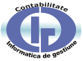

Contabilitate și Informatică de Gestiune
În anul universitar 1996-1997, „consiliul facultăţii întrunit la 30.01.1996 a hotărât schimbarea denumirii facultăţii în
Contabilitate şi Informatică de Gestiune.
Până în anul 2002, au existat 2 pachete opţionale: Contabilitate şi diagnostic de întreprindere, respectiv Audit şi control de gestiune.
Din anul universitar 2002-2003 există o singură specializare, Contabilitate şi informatică de gestiune.
Un alt moment important în istoria facultăţii îl reprezintă anul universitar 2007 - 2008, moment în care studenţii uneia din seriile constituite
la programul licenţă au avut posibilitatea de a studia în limba engleză, ca urmare a acreditării, situaţie care s-a menţinut şi pentru studenţii
înmatriculaţi în anul universitar următor.
Programe de studii universitare de licentă
- Contabilitate și informatică de gestiune
Facultatea admite anual în jur de 500 de studenţi în programul de studii licenţă, forma de învățământ cu frecvență, cu durata de 3 ani.
Acest program vizează dezvoltarea competenţelor fundamentale în domeniul contabilităţii şi informaticii de gestiune.
Printr-un plan de învăţământ modern, aliniat la tendinţele internaţionale şi la cerinţele organismelor profesiei contabile, răspundem nevoilor actuale ale
mediului de afaceri.
Planul de învățământ este axat pe discipline de specialitate oferind competențe în domeniile: Contabilitate, Informatică de gestiune, Audit, Drept și Analiză financiară.
- Contabilitate și informatică de gestiune - cu predare în limba engleză
Specializarea CIG în limba engleză se adresează candidaților ce doresc să aprofundeze cunoștințele de specialitate într-o limbă de
circulație internațională. Acest program de studii vine în întâmpinarea cerințelor partenerilor din mediul de afaceri și răspunde solicitărilor de pe
piața forței de muncă cu privire la pregătirea specialiștilor contabili.
Planul de învățământ este identic cu cel de la specializarea în limba română, dar limba de studiu este engleza pentru toate disciplinele prevăzute
în curricula.
- Contabilitate și informatică de gestiune - învățământ la distanță (ID)
Învatamântul la distanta ofera cursantilor un proces flexibil de instruire, de acumulare si aprofundare a cunostintelor.
Învatamântul la distanta în Academia de Studii Economice din Bucuresti se bazeaza pe un proces centrat pe formatori (cadre didactice)
care coordoneaza si controleaza materialele de studiu si ritmul de învatare, modalitate specifica formarii de baza din primul ciclu universitar.
Anul universitar este format din 2 semestre, cu o durata de 14 saptamâni fiecare, structurate astfel:
-7 saptamâni de activitati didactice (tutoriale, teme de control si activitati aplicative asistate), împartite în doua perioade de 3 saptamâni si respectiv
4 saptamâni;
-7saptamâni de pregatire individuală.